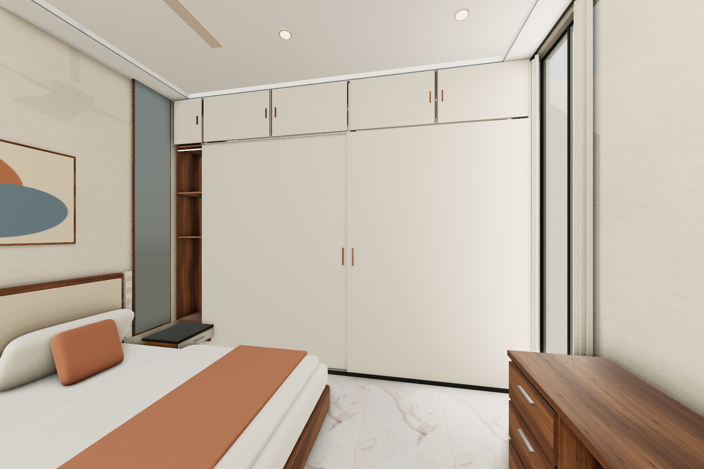
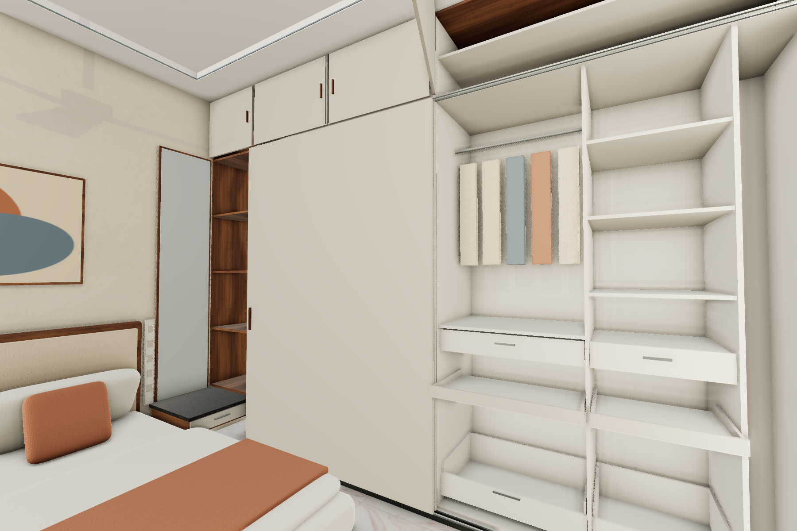
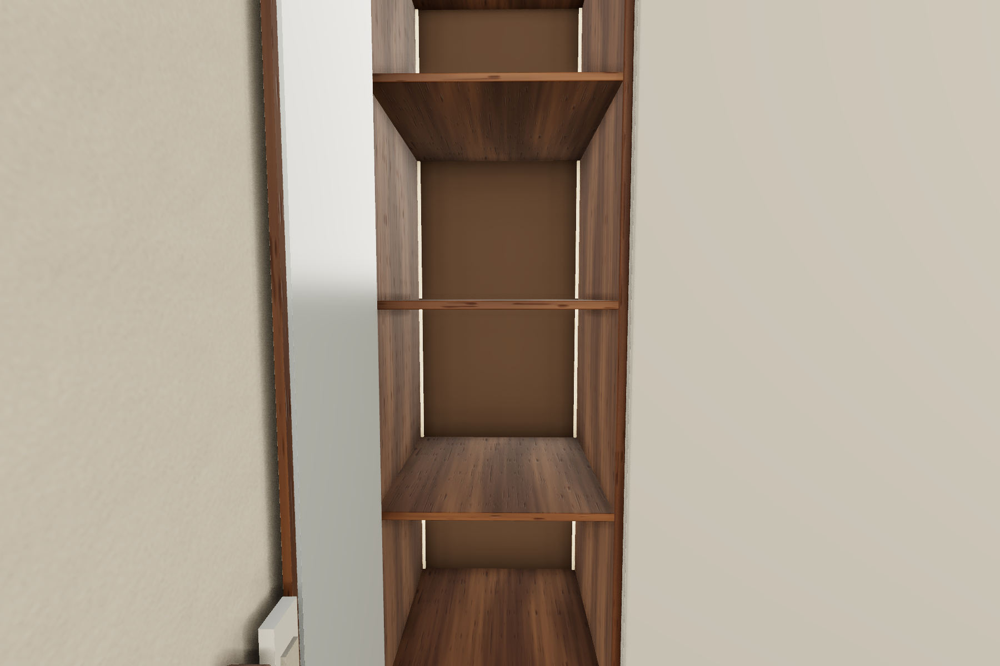
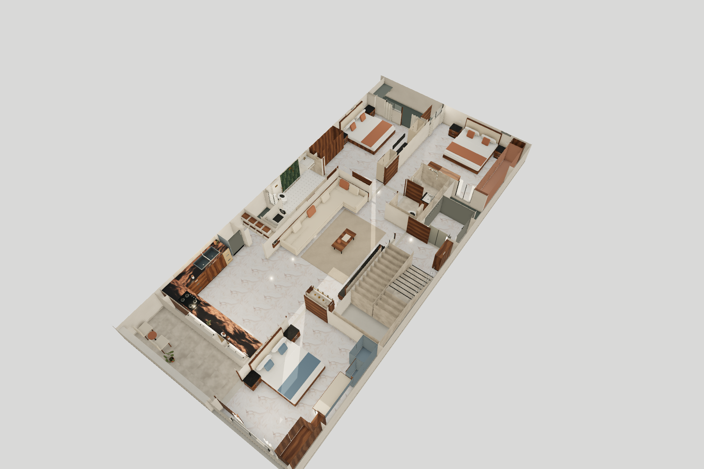
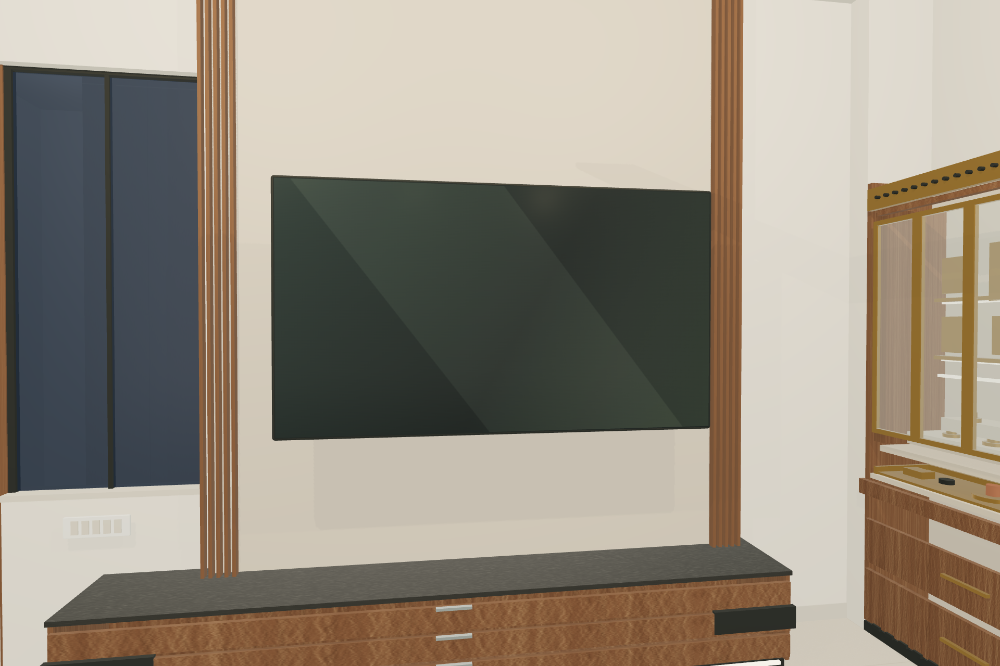

JAIPUR HOME · SINGLE GIT-TRACKED MODEL
The ceiling-height backing clears the window, the low console reaches the window centreline, the TV is mounted 1 ft higher, the AC and main controls are wall-mounted correctly, and the sofa has an illuminated walnut service plank with integrated switches and charging.
See the kitchen–living ledgeExplore the TV wallDownload the 3D modelThe working model includes the floor-supported kitchen–living ledge set back near the sofa and flush to the west wall (R-019), and both kitchen worktops show the client-considered black-and-copper granite (R-020); the actual slab is not yet selected. The approved kitchen, puja unit and other rooms remain in the walkthrough. Switch between daylight and evening lighting, walk inside the model or save any view as an image.
Two wide lower sliding shutters open either wardrobe bay, and four upper hinged shutters open in left and right pairs. The right bay keeps a full 229 mm compartment. The lit open niche now lines up with the floating bedside, and the pale mirror stops below the corner upper door. Use the Bedroom 2 wardrobe controls to try both positions.
Explore Bedroom 2 wardrobe


The client’s 610 × 1,220 mm tile is shown across the dry interior floors, with the long edge across the plan and 1 mm joints. The bathrooms and open terrace retain their separate anti-slip floor concepts. The texture is based on one showroom photograph; check actual boxes and wet grip before installation.
Explore the whole house

Updated 28 October 2026. Git records each coherent change to this one maintained model. The architect’s windows, walls, columns, shafts and 10 ft ceiling are retained. Site measurement and coordinated shop drawings remain mandatory before fabrication.